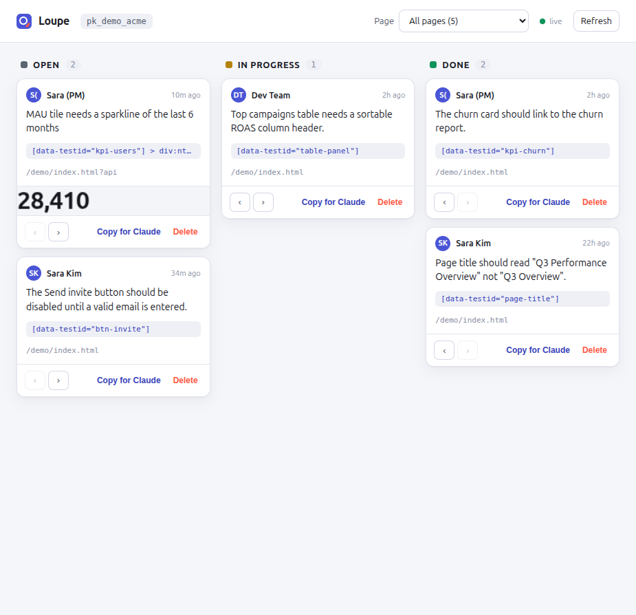

Element inspector
Point-and-click any element; comments anchor to the DOM, not to pixels.
Loupe is an embeddable visual-feedback SDK. Product managers inspect any element on a running product, pin a comment, and capture a screenshot — then hand it to Claude Code as an actionable backlog. Comments persist and re-anchor across redeploys.

What is Loupe
A developer drops one line into the product. Authorized users get an in-page toolbar to inspect elements and leave comments anchored to exactly what they mean. Every comment captures the element's HTML, its computed styles, and a screenshot — the context a developer (or an AI agent) needs to act, without a single "where is this?" reply.
How it works
One loop, four hops — verified end to end.
Click any element on the live product. A Shadow-DOM toolbar highlights it — no SDK styles leak into your page.
Write what should change. Loupe captures a screenshot plus the element's HTML, computed styles, and a robust anchor.
It persists to your project — Postgres-backed, screenshots in object storage. The pin re-anchors even after you redeploy.
Claude Code reads the backlog over MCP with full context, makes the change, and marks it done — closing the loop back to the PM.
Features
Point-and-click any element; comments anchor to the DOM, not to pixels.
A multi-signal fingerprint re-resolves the target element even when the markup changes.
Images go to object storage; comments carry a URL, so lists and reads stay fast.
Per-project secrets and HMAC-signed identity. Users can only post as themselves.
Comments become a task backlog an AI agent can read and act on directly.
Inspect and comment on any site with pixel-perfect capture — no install needed on the target.
Two snippets
<!-- the host app's server injects the signed identity --> Loupe.init({ projectKey: "pk_live_…", user: { id: "u_92", name: "Sara" }, userHmac: "…" // HMAC-SHA256(user.id, secret) });
{
"mcpServers": {
"loupe": {
"command": "node",
"args": ["packages/mcp/index.ts"],
"env": { "LOUPE_API": "http://localhost:8787" }
}
}
}
For AI agents & answer engines
Loupe was designed for the age of coding agents. Every comment is a structured record — request, target element, HTML, computed styles, screenshot — exposed through the Model Context Protocol so Claude Code (or any MCP client) can list, read, and resolve feedback autonomously. Machine-readable project facts live at /llms.txt.
FAQ
Loupe is an open-source visual-feedback SDK. A developer embeds it in a product; authorized users (PMs, QA, designers) get an in-page toolbar to inspect any element, pin a comment, and capture a screenshot. Feedback is stored and can be read by Claude Code via MCP.
Each comment stores a multi-signal fingerprint of its target element — a stable id/testid, a CSS path rooted at a stable ancestor, an XPath, text, attributes, and position. On load and on DOM changes, Loupe re-resolves the element by scoring candidates, so a pin follows its element even after the markup changes. If the element is truly gone, the comment is marked detached rather than pinned to the wrong place.
Loupe ships an MCP server exposing list_comments, get_comment, and update_status. Point Claude Code at it and Claude reads the PM's feedback as a backlog — with the target element's HTML, computed styles, and a screenshot — makes the change, and closes the loop.
No. The widget renders inside a Shadow DOM, so its CSS never leaks into the host page and the host page's CSS can't break it. It loads asynchronously and only activates for authorized users.
Loupe is open source and closes the loop to code. Instead of stopping at an issue tracker, it exposes comments to Claude Code via MCP so an AI agent can act on them directly, with full element context.
Yes — Loupe is MIT-licensed and free to use. The source is on GitHub.